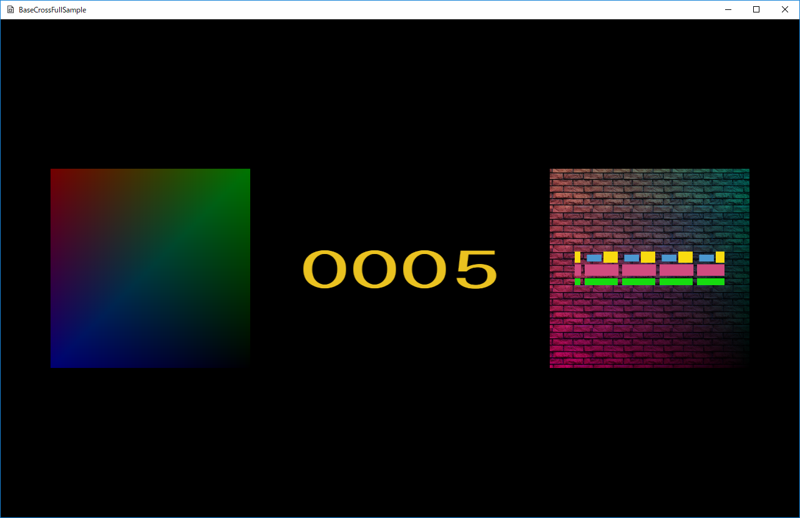

図1301a
ここで表示されているスプライトはCharacter.h/cppに記述があります。
void TraceSprite::OnCreate() {
float helfSize = 0.5f;
//頂点配列
m_BackupVertices = {
{ VertexPositionColor(Vec3(-helfSize, helfSize, 0),Col4(1.0f,0.0f,0.0f,0.0f)) },
{ VertexPositionColor(Vec3(helfSize, helfSize, 0), Col4(0.0f, 1.0f, 0.0f, 0.0f)) },
{ VertexPositionColor(Vec3(-helfSize, -helfSize, 0), Col4(0.0f, 0.0f, 1.0f, 0.0f)) },
{ VertexPositionColor(Vec3(helfSize, -helfSize, 0), Col4(0.0f, 0.0f, 0, 0.0f)) },
};
//インデックス配列
vector<uint16_t> indices = { 0, 1, 2, 1, 3, 2 };
SetAlphaActive(m_Trace);
auto ptrTrans = GetComponent<Transform>();
ptrTrans->SetScale(m_StartScale.x, m_StartScale.y, 1.0f);
ptrTrans->SetRotation(0, 0, 0);
ptrTrans->SetPosition(m_StartPos);
//頂点とインデックスを指定してスプライト作成
AddComponent<PCSpriteDraw>(m_BackupVertices, indices);
}
void GameStage::CreateTraceSprite() {
AddGameObject<TraceSprite>(true,
Vec2(320.0f, 320.0f), Vec3(-400.0f, 0.0f, 0.0f));
}
void TraceSprite::OnUpdate() {
float elapsedTime = App::GetApp()->GetElapsedTime();
m_TotalTime += elapsedTime;
if (m_TotalTime >= XM_PI) {
m_TotalTime = 0;
}
vector<VertexPositionColor> newVertices;
for (size_t i = 0; i < m_BackupVertices.size(); i++) {
Col4 col = m_BackupVertices[i].color;
col.w = sin(m_TotalTime);
auto v = VertexPositionColor(
m_BackupVertices[i].position,
col
);
newVertices.push_back(v);
}
auto ptrDraw = GetComponent<PCSpriteDraw>();
ptrDraw->UpdateVertices(newVertices);
}
col.w = sin(m_TotalTime);
ptrDraw->UpdateVertices(newVertices);
void WallSprite::OnCreate() {
float helfSize = 0.5f;
//頂点配列(縦横5個ずつ表示)
vector<VertexPositionColorTexture> vertices = {
{ VertexPositionColorTexture(Vec3(-helfSize, helfSize, 0),Col4(1.0f,1.0f,1.0f,1.0f), Vec2(0.0f, 0.0f)) },
{ VertexPositionColorTexture(Vec3(helfSize, helfSize, 0), Col4(0.0f, 1.0f, 1.0f, 1.0f), Vec2(5.0f, 0.0f)) },
{ VertexPositionColorTexture(Vec3(-helfSize, -helfSize, 0), Col4(1.0f, 0.0f, 1.0f, 1.0f), Vec2(0.0f, 5.0f)) },
{ VertexPositionColorTexture(Vec3(helfSize, -helfSize, 0), Col4(0.0f, 0.0f, 0, 1.0f), Vec2(5.0f, 5.0f)) },
};
//インデックス配列
vector<uint16_t> indices = { 0, 1, 2, 1, 3, 2 };
SetAlphaActive(m_Trace);
auto ptrTrans = GetComponent<Transform>();
ptrTrans->SetScale(m_StartScale.x, m_StartScale.y, 1.0f);
ptrTrans->SetRotation(0, 0, 0);
ptrTrans->SetPosition(m_StartPos);
//頂点とインデックスを指定してスプライト作成
auto ptrDraw = AddComponent<PCTSpriteDraw>(vertices, indices);
ptrDraw->SetSamplerState(SamplerState::LinearWrap);
ptrDraw->SetTextureResource(m_TextureKey);
}
void GameStage::CreateWallSprite() {
AddGameObject<WallSprite>(L"WALL_TX", false,
Vec2(320.0f, 320.0f), Vec3(400.0f, 0.0f, 0.1f));
}
void ScrollSprite::OnCreate() {
float helfSize = 0.5f;
//頂点配列
m_BackupVertices = {
{ VertexPositionTexture(Vec3(-helfSize, helfSize, 0), Vec2(0.0f, 0.0f)) },
{ VertexPositionTexture(Vec3(helfSize, helfSize, 0), Vec2(4.0f, 0.0f)) },
{ VertexPositionTexture(Vec3(-helfSize, -helfSize, 0), Vec2(0.0f, 1.0f)) },
{ VertexPositionTexture(Vec3(helfSize, -helfSize, 0), Vec2(4.0f, 1.0f)) },
};
//インデックス配列
vector<uint16_t> indices = { 0, 1, 2, 1, 3, 2 };
SetAlphaActive(m_Trace);
auto ptrTrans = GetComponent<Transform>();
ptrTrans->SetScale(m_StartScale.x, m_StartScale.y, 1.0f);
ptrTrans->SetRotation(0, 0, 0);
ptrTrans->SetPosition(m_StartPos);
//頂点とインデックスを指定してスプライト作成
auto ptrDraw = AddComponent<PTSpriteDraw>(m_BackupVertices, indices);
ptrDraw->SetSamplerState(SamplerState::LinearWrap);
ptrDraw->SetTextureResource(m_TextureKey);
}
void ScrollSprite::OnUpdate() {
float elapsedTime = App::GetApp()->GetElapsedTime();
m_TotalTime += elapsedTime;
if (m_TotalTime > 1.0f) {
m_TotalTime = 0;
}
vector<VertexPositionTexture> newVertices;
for (size_t i = 0; i < m_BackupVertices.size(); i++) {
Vec2 uv = m_BackupVertices[i].textureCoordinate;
if (uv.x == 0.0f) {
uv.x = m_TotalTime;
}
else if (uv.x == 4.0f) {
uv.x += m_TotalTime;
}
auto v = VertexPositionTexture(
m_BackupVertices[i].position,
uv
);
newVertices.push_back(v);
}
auto ptrDraw = GetComponent<PTSpriteDraw>();
ptrDraw->UpdateVertices(newVertices);
}
void ScoreSprite::OnCreate() {
float xPiecesize = 1.0f / (float)m_NumberOfDigits;
float helfSize = 0.5f;
//インデックス配列
vector<uint16_t> indices;
for (UINT i = 0; i < m_NumberOfDigits; i++) {
float vertex0 = -helfSize + xPiecesize * (float)i;
float vertex1 = vertex0 + xPiecesize;
//0
m_BackupVertices.push_back(
VertexPositionTexture(Vec3(vertex0, helfSize, 0), Vec2(0.0f, 0.0f))
);
//1
m_BackupVertices.push_back(
VertexPositionTexture(Vec3(vertex1, helfSize, 0), Vec2(0.1f, 0.0f))
);
//2
m_BackupVertices.push_back(
VertexPositionTexture(Vec3(vertex0, -helfSize, 0), Vec2(0.0f, 1.0f))
);
//3
m_BackupVertices.push_back(
VertexPositionTexture(Vec3(vertex1, -helfSize, 0), Vec2(0.1f, 1.0f))
);
indices.push_back(i * 4 + 0);
indices.push_back(i * 4 + 1);
indices.push_back(i * 4 + 2);
indices.push_back(i * 4 + 1);
indices.push_back(i * 4 + 3);
indices.push_back(i * 4 + 2);
}
//中略
//頂点とインデックスを指定してスプライト作成
auto ptrDraw = AddComponent<PTSpriteDraw>(m_BackupVertices, indices);
}
void GameStage::OnUpdate() {
float elapsedTime = App::GetApp()->GetElapsedTime();
m_TotalTime += elapsedTime;
if (m_TotalTime >= 10000.0f) {
m_TotalTime = 0.0f;
}
//スコアを更新する
auto ptrScor = GetSharedGameObject<ScoreSprite>(L"ScoreSprite");
ptrScor->SetScore(m_TotalTime);
}